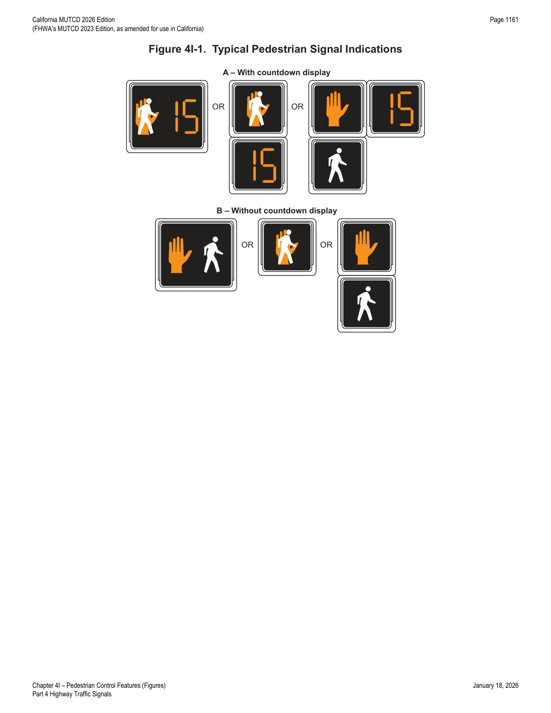
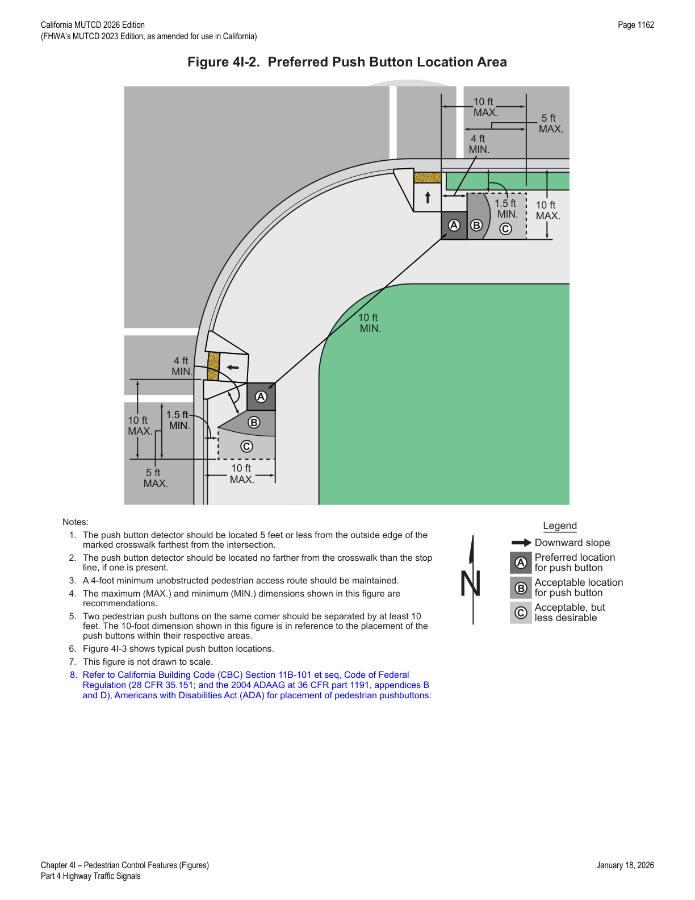
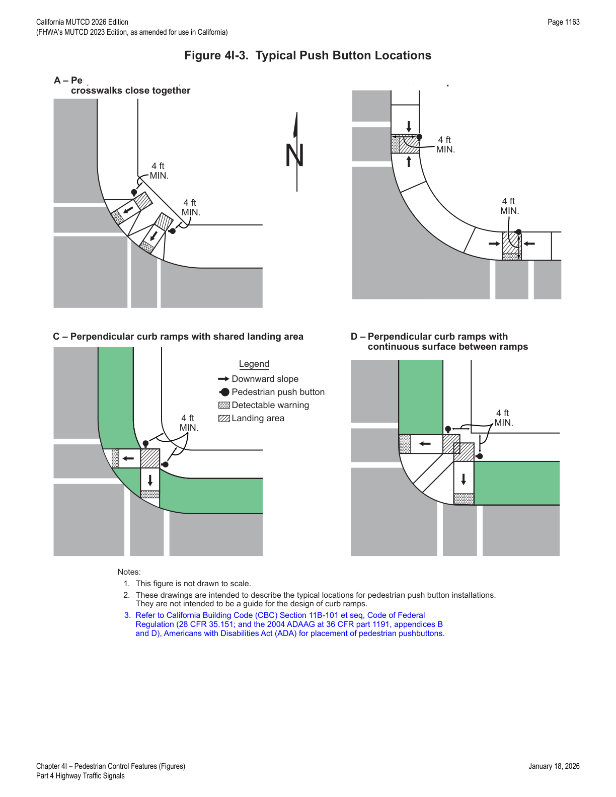
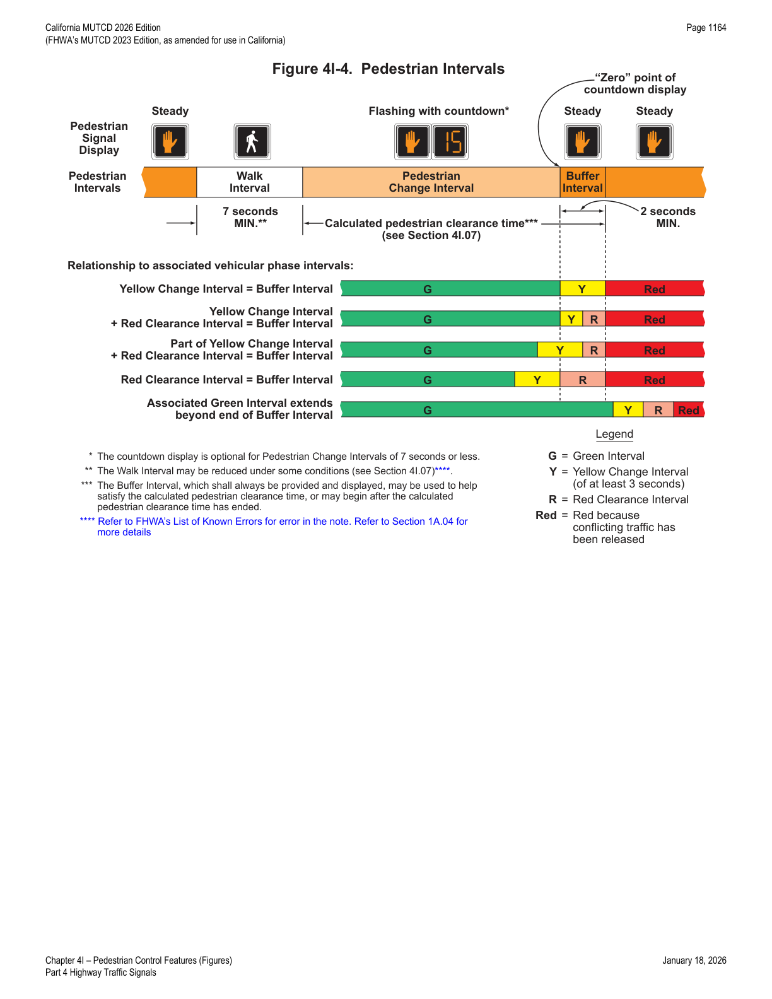

Part 4 · Highway Traffic Signals · Chapter 4I
Pedestrian Control Features
Design, mounting, timing, and detection requirements for pedestrian signal heads, countdown displays, and pedestrian push buttons at signalized crossings.
4I.01Pedestrian Signal Heads
- 01Pedestrian signal heads provide special types of traffic signal indications exclusively intended for controlling pedestrians. These signal indications consist of the illuminated symbols of a WALKING PERSON (symbolizing WALK) and an UPRAISED HAND (symbolizing DONT WALK).
- 02Section 4D.02 contains information on when to use pedestrian signal heads.
- 03Accessible pedestrian signals (see Chapter 4K) where pedestrian signal heads are used provide information in non-visual formats (such as audible tones and/or speech messages, and vibrating surfaces) so that a pedestrian with vision disabilities can know when to cross the street.
- 04Chapter 4J contains information regarding the use of pedestrian hybrid beacons and Chapter 4U contains information regarding the use of In-Roadway Warning Lights at unsignalized marked crosswalks.
4I.02Size, Design, and Illumination of Pedestrian Signal Head Indications
- 01All new pedestrian signal head indications shall be displayed within a rectangular background and shall consist of symbolized messages (see Figure 4I-1), except that existing pedestrian signal head indications with lettered or outline style symbol messages shall be permitted to be retained for the remainder of their useful service life. The symbol designs set forth in the "Standard Highway Signs" publication (see Section 1A.05) shall be used. Each pedestrian signal head indication shall be independently displayed and emit a single color.
- 02If a two-section pedestrian signal head is used, the UPRAISED HAND (symbolizing DONT WALK) signal section shall be mounted directly above the WALKING PERSON (symbolizing WALK) signal section. If a one-section pedestrian signal head is used, the symbols shall be either overlaid upon each other or arranged side-by-side with the UPRAISED HAND symbol to the left of the WALKING PERSON symbol, and a light source that can display each symbol independently shall be used.
- 03The WALKING PERSON (symbolizing WALK) signal indication shall be white, with all except the symbol obscured by an opaque material for signal optical units that use incandescent lamps within optical assemblies that include lenses. The UPRAISED HAND (symbolizing DONT WALK) signal indication shall be Portland orange, with all except the symbol obscured by an opaque material for signal optical units that use incandescent lamps within optical assemblies that include lenses.
- 04Except as provided in Paragraph 5 of this Section, the requirements of Chapter 3 of "Equipment and Materials Standards of the Institute of Transportation Engineers," 2008, ITE, that pertain to the aspects of the pedestrian signal head design that affect the display of the signal indications shall be met for signal optical units that use incandescent lamps within optical assemblies that include lenses. Except as provided in Paragraph 5, the requirements of "Pedestrian Traffic Control Signal Indicators — Light Emitting Diode (LED) Signal Modules," 2011, ITE, that pertain to the aspects of the signal head design that affect the display of the signal indications shall be met for LED pedestrian signal head modules.
- 05The intensity and distribution of light from each illuminated pedestrian signal lens or LED pedestrian signal head module should comply with the publications specified in Paragraph 4 of this Section, as appropriate.
- 06When not illuminated, the WALKING PERSON (symbolizing WALK) and UPRAISED HAND (symbolizing DONT WALK) symbols should not be visible to pedestrians at the far end of the crosswalk that the pedestrian signal head indications control.
- 07For pedestrian signal head indications, the symbols shall be at least 6 inches high.
- 08The light source of a flashing UPRAISED HAND (symbolizing DONT WALK) signal indication shall be flashed continuously at a rate of not less than 50 or more than 60 times per minute. The displayed period of each flash shall be a minimum of ½ and a maximum of ⅔ of the total flash cycle.
- 09Pedestrian signal head indications should be conspicuous and recognizable to pedestrians at all distances from the beginning of the controlled crosswalk to a point 10 feet from the end of the controlled crosswalk during both day and night.
- 10For crosswalks where the pedestrian enters the crosswalk more than 100 feet from the pedestrian signal head indications, the symbols should be at least 9 inches high.
- 11If the pedestrian signal indication is so bright that it causes excessive glare in nighttime conditions, some form of automatic dimming should be used to reduce the brilliance of the signal indication.
- 12An animated eyes symbol may be added to a pedestrian signal head in order to prompt pedestrians to look for vehicles in the intersection during the time that the WALKING PERSON (symbolizing WALK) signal indication is displayed.
- 13If used, the animated eyes symbol shall consist of an outline of a pair of white steadily illuminated eyes with white eyeballs that scan from side to side at a rate of approximately once per second. The animated eyes symbol shall be at least 12 inches wide with each eye having a width of at least 5 inches and a height of at least 2.5 inches. The animated eyes symbol shall be illuminated at the start of the walk interval and shall terminate at the end of the walk interval.

In practice: the countdown display and the two-section head are the near-universal choice for new installations; the older lettered "WALK"/"DONT WALK" heads shown as legacy retained equipment are being phased out as devices reach the end of useful service life.
4I.03Location and Height of Pedestrian Signal Heads
- 01Pedestrian signal heads shall be mounted with the bottom of the signal housing including brackets not less than 7 feet or more than 10 feet above sidewalk level, and shall be positioned and adjusted to provide maximum visibility at the beginning of the controlled sidewalk.
- 02If pedestrian signal heads are mounted on the same support as vehicular signal heads, there should be a physical separation between them.
4I.04Countdown Pedestrian Signals
- 01All pedestrian signal heads used at crosswalks where the pedestrian change interval is more than 7 seconds shall include a pedestrian change interval countdown display in order to inform pedestrians of the number of seconds remaining in the pedestrian change interval.
- 02Pedestrian signal heads used at crosswalks where the pedestrian change interval is 7 seconds or less may include a pedestrian change interval countdown display in order to inform pedestrians of the number of seconds remaining in the pedestrian change interval.
- 03Where countdown pedestrian signals are used, the countdown shall always be displayed simultaneously with the flashing UPRAISED HAND (symbolizing DONT WALK) signal indication displayed for that crosswalk.
- 04Countdown pedestrian signals shall consist of Portland orange numbers that are at least 6 inches in height on a black opaque background. The countdown pedestrian signal shall be located immediately adjacent to the associated UPRAISED HAND (symbolizing DONT WALK) pedestrian signal head indication (see Figure 4I-1).
- 05The display of the number of remaining seconds shall begin only at the beginning of the pedestrian change interval (flashing UPRAISED HAND). After the countdown displays zero, the display shall remain dark until the beginning of the next countdown.
- 06The countdown pedestrian signal shall display the number of seconds remaining until the termination of the pedestrian change interval (flashing UPRAISED HAND). Countdown displays shall not be used during the walk interval. Countdown displays shall not be used during the red clearance interval of a concurrent vehicular phase that is ending simultaneously with or after the end of the pedestrian phase.
- 07If used with a pedestrian signal head that does not have a concurrent vehicular phase, the pedestrian change interval (flashing UPRAISED HAND) should be set to be approximately 4 seconds less than the required pedestrian clearance time (see Section 4I.06) and an additional clearance interval (during which a steady UPRAISED HAND is displayed) should be provided prior to the start of the conflicting vehicular phase.
- 08For crosswalks where the pedestrian enters the crosswalk more than 100 feet from the countdown pedestrian signal display, the numbers should be at least 9 inches in height.
- 09Because some technology includes the countdown pedestrian signal logic in a separate timing device that is independent of the timing in the traffic signal controller, care should be exercised by the engineer when timing changes are made to pedestrian change intervals.
- 10If the pedestrian change interval is interrupted or shortened as a part of a transition into a preemption sequence (see Section 4F.19), the countdown pedestrian signal display should be discontinued and go dark immediately upon activation of the preemption transition.
- 11Refer to Section 9E.12 for countdown pedestrian signals, when used with bicycle boxes.
4I.05Pedestrian Detectors
- 01Pedestrian detectors may be push buttons or passive detection devices.
- 02Passive detection devices register the presence of a pedestrian in a position indicative of a desire to cross, without requiring the pedestrian to push a button. Some passive detection devices are capable of tracking the progress of a pedestrian as the pedestrian crosses the roadway for the purpose of extending or shortening the duration of certain pedestrian timing intervals.
- 03The provisions in this Section place pedestrian push buttons within easy reach of pedestrians who are intending to cross each crosswalk and make it obvious which push button is associated with each crosswalk. These provisions also position push button poles in optimal locations for installation of accessible pedestrian signals (see Chapter 4K). Information regarding reach ranges can be found in the U.S. Department of Justice 2010 ADA Standards for Accessible Design, September 15, 2010, 28 CFR 35 and 36, Americans with Disabilities Act of 1990.
- 04If pedestrian push buttons are used, they should be capable of easy activation requiring no more than 5 pounds of force, should not require tight grasping, pinching, or twisting of the wrist, and should be conveniently located near each end of the crosswalks. Except as provided in Paragraphs 5 and 6, pedestrian push buttons should be located to meet all of the following criteria (see Figure 4I-2):
- A. Unobstructed and accessible within one or more of the reach ranges specified in Section 308, and from a clear ground space as specified in Section 305, of the 2010 ADA Standards for Accessible Design;
- B. To provide a wheelchair accessible route from the push button to the ramp;
- C. On the side of the curb ramp which is farthest from the center of the intersection;
- D. Not greater than 10 feet from the edge of the associated curb ramp which is farther from the center of the intersection;
- E. Not greater than 5 feet from the outside edge of the marked crosswalk farthest from the center of the intersection;
- F. Not farther from the crosswalk than the stop line is, if present;
- G. Between 1.5 and 6 feet from the face of the curb or from the outside edge of the shoulder (or if no shoulder exists, from the edge of the pavement);
- H. With the face of the push button parallel to the crosswalk to be used;
- I. At a mounting height of approximately 3.5 feet, but no more than 4 feet, above the sidewalk;
- J. Allowing a minimum 4-foot continuous clear width for a pedestrian access route; and
- K. Outside the flared side of the curb ramp, if present.
- 05Where there are physical constraints that make it impracticable to place the pedestrian push button adjacent to a level all-weather surface, the surface should be as level as feasible.
- 06Where there are physical constraints that make it impracticable to place the pedestrian push button between 1.5 and 6 feet from the face of the curb or from the outside edge of the shoulder (or if no shoulder exists, from the edge of the pavement), it should not be farther than 10 feet from the face of the curb or from the outside edge of the shoulder (or if no shoulder exists, from the edge of the pavement).
- 07Except as provided in Paragraph 8 of this Section, where two pedestrian push buttons are provided on the same corner of a signalized location, the push buttons should be separated by a distance of at least 10 feet.
- 08Where there are physical constraints on a particular corner that make it impracticable to provide the 10-foot separation between the two pedestrian push buttons, the push buttons may be placed closer together or on the same pole.

- 09Figure 4I-3 shows typical pedestrian push button locations for a variety of situations.
- 10If a pedestrian push button is provided, a sign (see Section 2B.58) shall also be installed adjacent to or immediately above the pedestrian push button detector explaining the purpose and use.

- 11At certain locations, a supplemental sign in a more visible location may be used to call attention to the pedestrian push button.
- 12The positioning of pedestrian push buttons and the legends on the pedestrian push button signs shall indicate which crosswalk signal is actuated by each pedestrian push button.
- 13If the pedestrian clearance time is sufficient only to cross from the curb or shoulder to a median of sufficient width for pedestrians to wait and the signals are pedestrian actuated, an additional pedestrian detector shall be provided in the median.
- 14The use of additional pedestrian detectors on islands or medians where a pedestrian might become stranded should be considered.
- 15If used, special purpose push buttons (to be operated only by authorized persons) should include a housing capable of being locked to prevent access by the general public and do not need an instructional sign.
- 16If used, a pilot light or other means of indication installed with a pedestrian push button shall not be illuminated until actuation. Once it is actuated, the pilot light shall remain illuminated until the pedestrian's green or WALKING PERSON (symbolizing WALK) signal indication is displayed.
- 17At signalized locations with a demonstrated need and subject to equipment capabilities, pedestrians with special needs may be provided with additional crossing time by means of an extended push button press.
- 18If additional crossing time is provided by means of an extended push button press, a PUSH BUTTON FOR 2 SECONDS FOR EXTRA CROSSING TIME (R10-32P) plaque (see Figure 2B-27) shall be installed adjacent to the pedestrian push button detector.
In practice: the 11-point placement checklist in Paragraph 4 is the most-cited part of this section during ADA-compliance reviews — plan-check staff typically verify criteria D, E, G, and I (distance to curb ramp, distance to crosswalk, offset from curb, and mounting height) first since they are the easiest to measure from as-built plans.
4I.06Pedestrian Intervals and Signal Phases
- 01At intersections equipped with pedestrian signal heads, the pedestrian signal indications shall be displayed except when the vehicular traffic control signal is being operated in the flashing mode. At those times, the pedestrian signal indications shall not be displayed.
- 02Except as provided in Paragraph 3 of Section 4J.03, when the pedestrian signal heads associated with a crosswalk are displaying either a steady WALKING PERSON (symbolizing WALK) or a flashing UPRAISED HAND (symbolizing DONT WALK) signal indication, a steady red signal indication shall be shown to any conflicting vehicular movement that is approaching the intersection or midblock location perpendicular or nearly perpendicular to the crosswalk.
- 03When pedestrian signal heads are used, a WALKING PERSON (symbolizing WALK) signal indication shall be displayed only when pedestrians are permitted to leave the curb or shoulder.
- 04A pedestrian change interval consisting of a flashing UPRAISED HAND (symbolizing DONT WALK) signal indication shall begin immediately following the WALKING PERSON (symbolizing WALK) signal indication except as provided in Section 4F.19. Following the pedestrian change interval, a buffer interval consisting of a steady UPRAISED HAND (symbolizing DONT WALK) signal indication shall be displayed for at least 2 seconds prior to the release of any conflicting vehicular movement. The sum of the time of the pedestrian change interval and the buffer interval shall not be less than the calculated pedestrian clearance time (see Paragraphs 7 through 16 of this Section). The buffer interval shall not begin later than the beginning of the red clearance interval, if used.
- 05During the yellow change interval, the UPRAISED HAND (symbolizing DON'T WALK) signal indication may be displayed as either a flashing indication, a steady indication, or a flashing indication for an initial portion of the yellow change interval and a steady indication for the remainder of the interval.
- 06Figure 4I-4 illustrates the pedestrian intervals and their possible relationships with associated vehicular signal phase intervals.
- 07Except as provided in Paragraph 8 of this Section, the pedestrian clearance time should be sufficient to allow a pedestrian crossing in the crosswalk who left the curb or edge of pavement at the end of the WALKING PERSON (symbolizing WALK) signal indication to travel at a walking speed of 3.5 feet per second to at least the far side of the traveled way or to a median of sufficient width for pedestrians to wait.
- 08A walking speed of up to 4 feet per second may be used to evaluate the sufficiency of the pedestrian clearance time at locations where an extended push button press function has been installed to provide slower pedestrians an opportunity to request and receive a longer pedestrian clearance time. Passive pedestrian detection may also be used to automatically adjust the pedestrian clearance time based on the pedestrian's actual walking speed or actual clearance of the crosswalk.
- 09The additional time provided by an extended push button press to satisfy pedestrian clearance time needs may be added to either the walk interval or the pedestrian change interval.
- 10Where pedestrians who walk slower than 3.5 feet per second, or pedestrians who use wheelchairs, routinely use the crosswalk, a walking speed of less than 3.5 feet per second should be considered in determining the pedestrian clearance time.
- 10aWhere older or disabled pedestrians routinely use the crosswalk, a walking speed of 2.8 feet per second should be considered in determining the pedestrian clearance time.
- 11Except as provided in Paragraph 12 of this Section, the walk interval should be at least 7 seconds in length so that pedestrians will have adequate opportunity to leave the curb or shoulder before the pedestrian clearance time begins.
- 12If pedestrian volumes and characteristics do not require a 7-second walk interval, walk intervals as short as 4 seconds may be used.
- 13The walk interval is intended for pedestrians to start their crossing. The pedestrian clearance time is intended to allow pedestrians who started crossing during the walk interval to complete their crossing. Longer walk intervals are often used when the duration of the vehicular green phase associated with the pedestrian crossing is long enough to allow it.
- 14The total of the walk interval and pedestrian clearance time should be sufficient to allow a pedestrian crossing in the crosswalk who left the pedestrian detector (or, if no pedestrian detector is present, a location 6 feet behind the face of the curb or 6 feet behind the edge of the pavement) at the beginning of the WALKING PERSON (symbolizing WALK) signal indication to travel at a walking speed of 3 feet per second to the far side of the traveled way being crossed or to the median if a two-stage pedestrian crossing sequence is used. Any additional time that is required to satisfy the conditions of this paragraph should be added to the walk interval.
- 15On a street with a median of sufficient width for pedestrians to wait, a pedestrian clearance time that allows the pedestrian to cross only from the curb or shoulder to the median may be provided.
- 16Where the pedestrian clearance time is sufficient only for crossing from the curb or shoulder to a median of sufficient width for pedestrians to wait, median-mounted pedestrian signals, with pedestrian detectors (see Sections 4I.05 and 4K.01) if actuated operation is used, shall be provided and signing such as the R10-3d sign (see Section 2B.58) shall be provided to notify pedestrians to cross only to the median to await the next WALKING PERSON (symbolizing WALK) signal indication.
- 17Accessible pedestrian signals (see Chapter 4K) where median-mounted pedestrian signals and detectors are used provide information in non-visual formats (such as audible tones and/or speech messages, and vibrating surfaces) so that a pedestrian with vision disabilities can know when to resume crossing the street after crossing to the median.
- 18During the transition into preemption, the walk interval and the pedestrian change interval may be shortened or omitted as described in Section 4F.19.
- 19At intersections with high pedestrian volumes and high conflicting turning vehicle volumes, a brief leading pedestrian interval, during which an advance WALKING PERSON (symbolizing WALK) indication is displayed for the crosswalk while red indications continue to be displayed to parallel through and/or turning traffic, may be used to reduce conflicts between pedestrians and turning vehicles.
- 20Accessible pedestrian signals (see Chapter 4K) where leading pedestrian intervals are used provide information in non-visual formats (such as audible tones and/or speech messages, and vibrating surfaces) so that a pedestrian with vision disabilities can know when to cross the street in the absence of the audible cues normally provided when the onset of the vehicular and pedestrian movements coincide.
- 21If a leading pedestrian interval is used without accessible features, pedestrians with vision disabilities might begin crossing at the onset of the vehicular movement when vehicle operators are not expecting them to begin crossing.
- 22If a leading pedestrian interval is used, it should be at least 3 seconds in duration and should be timed to allow pedestrians to cross at least one lane of traffic or, in the case of a large corner radius, to travel far enough for pedestrians to establish their position ahead of the turning traffic before the turning traffic is released.
- 23If a leading pedestrian interval is used, consideration should be given to prohibiting turns across the crosswalk during the leading pedestrian interval.
- 24At locations where a leading pedestrian interval is used, the minimum time for the WALKING PERSON (symbolizing WALK) indication should be the time provided for the leading pedestrian interval plus 7 seconds.
- 25At intersections with pedestrian volumes that are so high that drivers have difficulty finding an opportunity to turn across the crosswalk, the duration of the green interval for a parallel concurrent vehicular movement is sometimes intentionally set to extend beyond the pedestrian clearance time to provide turning drivers additional green time to make their turns while the pedestrian signal head is displaying a steady UPRAISED HAND (symbolizing DONT WALK) signal indication after pedestrians have had time to complete their crossings.

In practice: note that the figure's own footnote acknowledges a known FHWA erratum regarding the walk-interval-reduction cross-reference (the text points to "Section 4I.07," which does not exist in this chapter — the correct cross-reference is Paragraph 12 of Section 4I.06, governing shortened walk intervals). Always verify against Section 1A.04's List of Known Errors before relying on cross-references of this kind.
★ Key Takeaways — Chapter 4I
- New pedestrian signal heads must use symbolized WALK/DONT WALK indications at least 6 inches high (9 inches if pedestrians enter the crosswalk more than 100 feet away), mounted 7–10 feet above sidewalk level.
- A countdown display is mandatory whenever the pedestrian change interval exceeds 7 seconds, using 6-inch (or 9-inch) Portland orange numbers on black, timed exactly with the flashing UPRAISED HAND.
- Pedestrian push buttons must satisfy an 11-point placement checklist (reach range, distance to curb ramp/crosswalk, curb offset, height ~3.5–4 ft, 4-ft clear access route) and be separated by at least 10 feet when two are on one corner, unless site constraints apply.
- Walk interval should generally be at least 7 seconds (4 seconds minimum if volumes allow); pedestrian clearance time is calculated at 3.5 ft/sec walking speed (slower speeds, down to 2.8 ft/sec, considered for older/disabled populations), with a buffer interval of at least 2 seconds before conflicting traffic is released.
- Leading pedestrian intervals (at least 3 seconds) and median-mounted signals for two-stage crossings are permitted tools for high-conflict or wide-street locations.